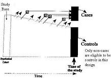
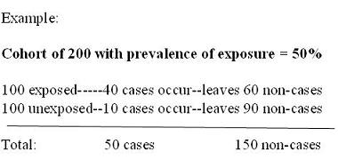
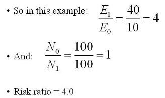
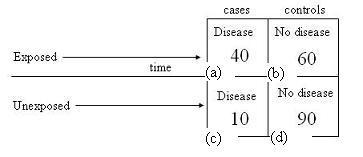
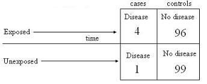

| Design | Sampling | Measure of Association |
|---|---|---|
| Case-cohort | Entire cohort at baseline | risk ratio |
| Incidence-density | Non-cases at time of diagnosis | rate ratio |
| Prevalent Case Control | Non-cases at single point in time |
|

So using prevalent controls, you get:

IN this example,
IN this example,